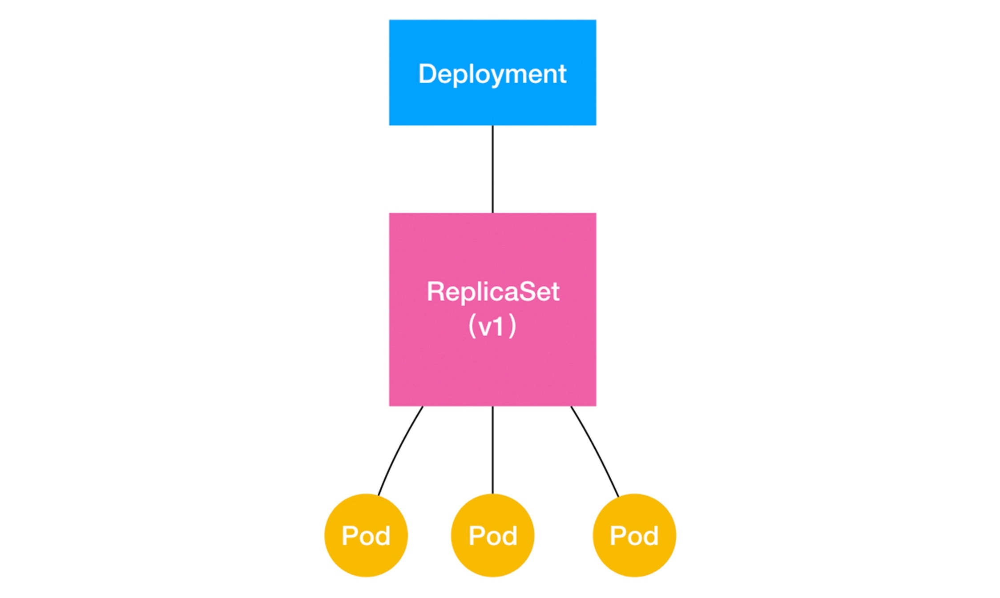

深入剖析 Kubernetes
01
云计算已经蜕变成 虚拟机和账单
改变一切的是 docker 镜像 解决了本地和云端环境一致的问题
05
容器技术的核心功能，就是通过约束和修改进程的动态表现，从而为其创造出一个边界
Cgroups技术是用来制造约束的主要手段，而Namespace技术则是用来修改进程视图的主要方法
Docker 容器这个听起来玄而又玄的概念，实际上是在创建容器进程时，指定了这个进程所需要启用的一组 Namespace 参数。这样，容器就只能“看”到当前 Namespace 所限定的资源、文件、设备、状态，或者配置。而对于宿主机以及其他不相关的程序，它就完全看不到了。
容器，其实是一种特殊的进程而已。
06
容器是一个 “单进程” 模型
一个正在运行的 Docker 容器，其实就是一个启用了多个 Linux Namespace 的应用进程，而这个进程能够使用的资源量，则受 Cgroups 配置的限制。
07
rootfs
08
默认情况下，Docker 会为你提供一个隐含的 ENTRYPOINT，即：/bin/sh -c。所以，在不指定 ENTRYPOINT 时，比如在我们这个例子里，实际上运行在容器里的完整进程是：/bin/sh -c "python app.py"，即 CMD 的内容就是 ENTRYPOINT 的参数。
09
Kubernetes 项目的架构, 都由 Master 和 Node 两种节点组成，而这两种角色分别对应着控制节点和计算节点。
其中，控制节点，即 Master 节点，由三个紧密协作的独立组件组合而成，它们分别是负责 API 服务的 kube-apiserver、负责调度的 kube-scheduler，以及负责容器编排的 kube-controller-manager。整个集群的持久化数据，则由 kube-apiserver 处理后保存在 Etcd 中。
而计算节点上最核心的部分，则是一个叫作 kubelet 的组件。
在 Kubernetes 项目中，kubelet 主要负责同容器运行时（比如 Docker 项目）打交道。而这个交互所依赖的，是一个称作 CRI（Container Runtime Interface）的远程调用接口，这个接口定义了容器运行时的各项核心操作，比如：启动一个容器需要的所有参数。
而 kubelet 的另一个重要功能，则是调用网络插件和存储插件为容器配置网络和持久化存储。这两个插件与 kubelet 进行交互的接口，分别是 CNI（Container Networking Interface）和 CSI（Container Storage Interface）。
运行在大规模集群中的各种任务之间，实际上存在着各种各样的关系。这些关系的处理，才是作业编排和管理系统最困难的地方。
14
Pod 生命周期的变化，主要体现在 Pod API 对象的 Status 部分，这是它除了 Metadata 和 Spec 之外的第三个重要字段。其中，pod.status.phase，就是 Pod 的当前状态，它有如下几种可能的情况：
- Pending。这个状态意味着，Pod 的 YAML 文件已经提交给了 Kubernetes，API 对象已经被创建并保存在 Etcd 当中。但是，这个 Pod 里有些容器因为某种原因而不能被顺利创建。比如，调度不成功。
- Running。这个状态下，Pod 已经调度成功，跟一个具体的节点绑定。它包含的容器都已经创建成功，并且至少有一个正在运行中。
- Succeeded。这个状态意味着，Pod 里的所有容器都正常运行完毕，并且已经退出了。这种情况在运行一次性任务时最为常见。
- Failed。这个状态下，Pod 里至少有一个容器以不正常的状态（非 0 的返回码）退出。这个状态的出现，意味着你得想办法 Debug 这个容器的应用，比如查看 Pod 的 Events 和日志。
- Unknown。这是一个异常状态，意味着 Pod 的状态不能持续地被 kubelet 汇报给 kube-apiserver，这很有可能是主从节点（Master 和 Kubelet）间的通信出现了问题。
更进一步地，Pod 对象的 Status 字段，还可以再细分出一组 Conditions。这些细分状态的值包括：PodScheduled、Ready、Initialized，以及 Unschedulable。它们主要用于描述造成当前 Status 的具体原因是什么。
15
Kubernetes 支持的 Projected Volume 一共有四种：
- Secret；
- ConfigMap；
- Downward API；
- ServiceAccountToken。
其实，Secret、ConfigMap，以及 Downward API 这三种 Projected Volume 定义的信息，大多还可以通过环境变量的方式出现在容器里。但是，通过环境变量获取这些信息的方式，不具备自动更新的能力。所以，一般情况下，我都建议你使用 Volume 文件的方式获取这些信息。
而作为用户，你还可以通过设置 restartPolicy，改变 Pod 的恢复策略。除了 Always，它还有 OnFailure 和 Never 两种情况：
- Always：在任何情况下，只要容器不在运行状态，就自动重启容器；
- OnFailure: 只在容器 异常时才自动重启容器；
- Never: 从来不重启容器。
只要记住如下两个基本的设计原理即可：
- 只要 Pod 的 restartPolicy 指定的策略允许重启异常的容器（比如：Always），那么这个 Pod 就会保持 Running 状态，并进行容器重启。否则，Pod 就会进入 Failed 状态 。
- 对于包含多个容器的 Pod，只有它里面所有的容器都进入异常状态后，Pod 才会进入 Failed 状态。在此之前，Pod 都是 Running 状态。此时，Pod 的 READY 字段会显示正常容器的个数
livenessProbe 检查服务是否健康，状态是否为running
readnessProbe 是否能被Service使用
PodPreset 可以写通用的字段，给pod用，只会更改pod，而不会修改deployment
17

18
StatefulSet 的设计其实非常容易理解。它把真实世界里的应用状态，抽象为了两种情况：
- 拓扑状态。这种情况意味着，应用的多个实例之间不是完全对等的关系。这些应用实例，必须按照某些顺序启动，比如应用的主节点 A 要先于从节点 B 启动。而如果你把 A 和 B 两个 Pod 删除掉，它们再次被创建出来时也必须严格按照这个顺序才行。并且，新创建出来的 Pod，必须和原来 Pod 的网络标识一样，这样原先的访问者才能使用同样的方法，访问到这个新 Pod。
- 存储状态。这种情况意味着，应用的多个实例分别绑定了不同的存储数据。对于这些应用实例来说，Pod A 第一次读取到的数据，和隔了十分钟之后再次读取到的数据，应该是同一份，哪怕在此期间 Pod A 被重新创建过。这种情况最典型的例子，就是一个数据库应用的多个存储实例。
StatefulSet 这个控制器的主要作用之一，就是使用 Pod 模板创建 Pod 的时候，对它们进行编号，并且按照编号顺序逐一完成创建工作。而当 StatefulSet 的“控制循环”发现 Pod 的“实际状态”与“期望状态”不一致，需要新建或者删除 Pod 进行“调谐”的时候，它会严格按照这些 Pod 编号的顺序，逐一完成这些操作。
19
首先，StatefulSet 的控制器直接管理的是 Pod。这是因为，StatefulSet 里的不同 Pod 实例，不再像 ReplicaSet 中那样都是完全一样的，而是有了细微区别的。比如，每个 Pod 的 hostname、名字等都是不同的、携带了编号的。而 StatefulSet 区分这些实例的方式，就是通过在 Pod 的名字里加上事先约定好的编号。
其次，Kubernetes 通过 Headless Service，为这些有编号的 Pod，在 DNS 服务器中生成带有同样编号的 DNS 记录。只要 StatefulSet 能够保证这些 Pod 名字里的编号不变，那么 Service 里类似于 web-0.nginx.default.svc.cluster.local 这样的 DNS 记录也就不会变，而这条记录解析出来的 Pod 的 IP 地址，则会随着后端 Pod 的删除和再创建而自动更新。这当然是 Service 机制本身的能力，不需要 StatefulSet 操心。
最后，StatefulSet 还为每一个 Pod 分配并创建一个同样编号的 PVC。这样，Kubernetes 就可以通过 Persistent Volume 机制为这个 PVC 绑定上对应的 PV，从而保证了每一个 Pod 都拥有一个独立的 Volume。
26
而在 Kubernetes 项目中，负责完成授权（Authorization）工作的机制，就是 RBAC：基于角色的访问控制（Role-Based Access Control）。
如果你直接查看 Kubernetes 项目中关于 RBAC 的文档的话，可能会感觉非常复杂。但实际上，等到你用到这些 RBAC 的细节时，再去查阅也不迟。
而在这里，我只希望你能明确三个最基本的概念。
- Role：角色，它其实是一组规则，定义了一组对 Kubernetes API 对象的操作权限。
- Subject：被作用者，既可以是“人”，也可以是“机器”，也可以是你在 Kubernetes 里定义的“用户”。
- RoleBinding：定义了“被作用者”和“角色”的绑定关系。
33
Flannel 项目是 CoreOS 公司主推的容器网络方案。事实上，Flannel 项目本身只是一个框架，真正为我们提供容器网络功能的，是 Flannel 的后端实现。目前，Flannel 支持三种后端实现，分别是：
- VXLAN；
- host-gw；
- UDP。
35
所谓 BGP，就是在大规模网络中实现节点路由信息共享的一种协议。
Calico 项目的架构
- Calico 的 CNI 插件。这是 Calico 与 Kubernetes 对接的部分。
- Felix。它是一个 DaemonSet，负责在宿主机上插入路由规则（即：写入 Linux 内核的 FIB 转发信息库），以及维护 Calico 所需的网络设备等工作。
- BIRD。它就是 BGP 的客户端，专门负责在集群里分发路由规则信息。